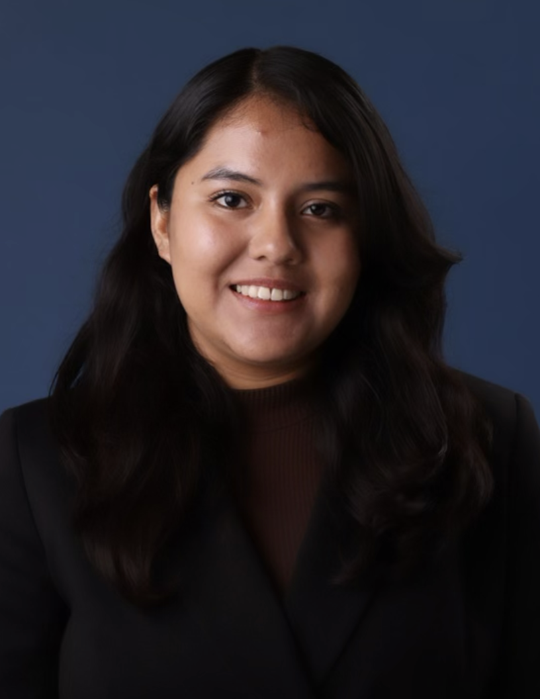

Claudia Pascual
UCR Data Science Undergraduate
Linkedin
Github
About
My name is Claudia Pascual and currently a student at UCR. Intrested in learning startup skills as I'm here in Japan. Excited to learn about the culture and enjoy the food.
Work Experience
| Riverside City Hall
| Project Management Aide Intern
| 11/2019 - 03/2020
|
Education
| Unviersity of California, Riverside
| Riverside, CA
| 01/2022 - 03/2024
|
| Riverside Community College
| Riverside, CA
| 06/2019 - 06/2021
|
Course Work
- Introduction to Machine Learning
- Computer Vision
- Big Data
Skills
- Python
- C++
- R
- Java
- Matlab
- SQL
- AWS
Projects
- Worked as Sublead Driver and Viewer Interface for UCR SHPE Solar Boat.
- Utilized Python for Data Wrangling and Feature Engineering to creating variables such as asthma, allergies, etc using ICD10 codes